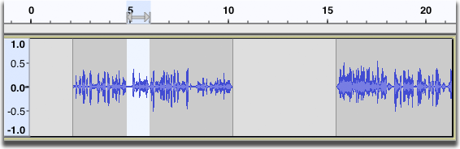
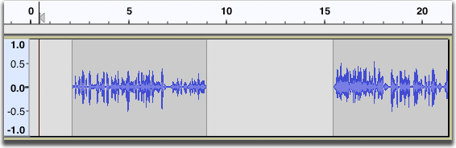
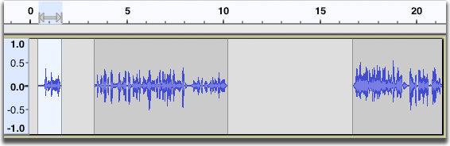
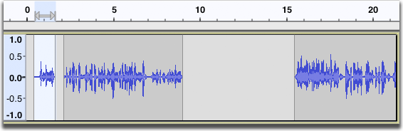
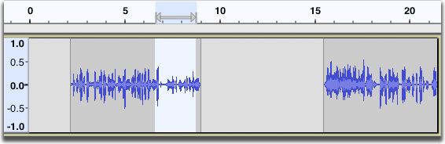
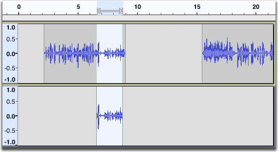

Edit Menu: Copy, Paste and Duplicate
Only one item can be on the clipboard at a time.
Copy Ctrl + C
Copies the selected audio data to the Audacity clipboard without removing it from the project.
Cut Ctrl + X
Similar to Copy, but removes the selected audio data and and places these on the Audacity clipboard. Any audio data to the right of the selection are shifted to the left.
Paste Ctrl + V
Pastes audio which has been cut or copied to the Audacity clipboard, either inserting it into the selected track(s) at the cursor point, or replacing the current selection region(s).
- Pasting inside a clip, with "Editing clips can move other clips" checked:
- 
When you select Paste and the cursor is outside a clip, and there is enough room for the audio that is on the clipboard, the audio on the clipboard can be inserted without any other clips being shifted over if "Editing clips can move other clips" is not checked. If "Editing clips can move other clips" is checked, the following audio will always be moved.
- Pasting outside a clip, with "Editing clips can move other clips" checked:
- 
- 
- Pasting outside a clip, with "Editing clips can move other clips" not checked:
- 
Pasting into a new track
If you want to create a new track and paste into that, the paste will automatically create a new mono or stereo track as appropriate, with the audio starting at time zero, if you:
- Paste into an empty project window
- Click in the gray background underneath the last track in the project to deselect all the tracks, then paste.
- You can paste from a mono track into a stero track - the mono audio will be replicated in both stereo channels.
- You cannot paste from a stereo track into a mono track. (You will get an error message if you try to do this.)
If you want the paste to start at other than time zero you must first use Tracks > Add New > Mono Track (or Add New > Stereo Track), place the cursor where you want to paste, then make the paste.
Duplicate Ctrl + D
Creates a new track containing only the current selection as a new clip. The new clip is at the same position on the Timeline as the original audio. This is essentially a shortcut method of performing copy, add new track and paste, except that the duplicated audio is not copied to the Audacity clipboard, so cannot be pasted anywhere else.
- 
- 
- You can do interesting things to your duplicates to create special effects. With two versions of the track to work with, you can silence a section, reverb another section, phase a third, filter another (in one track or the other) and see how that sounds.